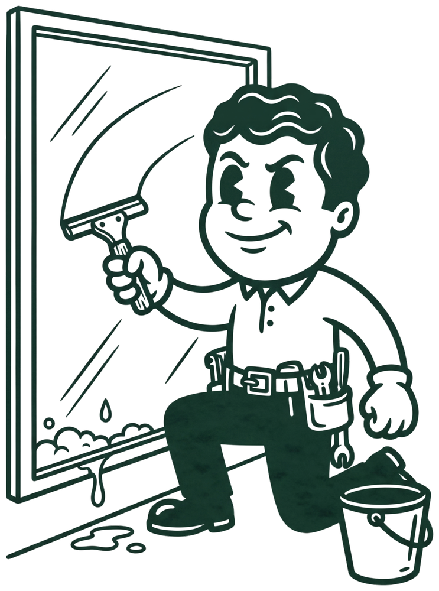
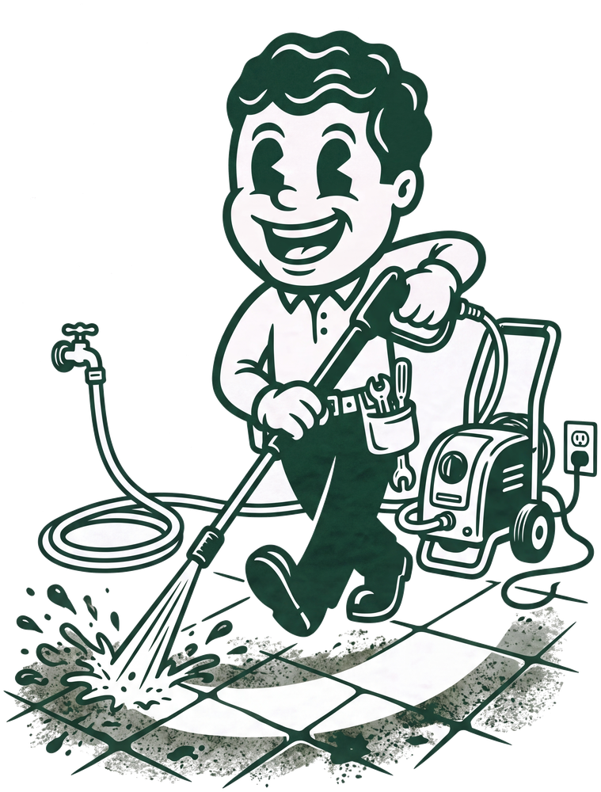

Vi har med vilje et smalt udvalg. Her står præcis, hvad der er med i hver opgave, og hvad vi ikke tager os af.

Vi vasker ruden med mikrofiber, sæbe og vand, og skraber den blank med det samme — ingen rester, ingen striber. Til sidst tørrer vi kanter og hjørner af med en tør mikrofiberklud, så selv de sidste dråber er væk.
Bedene får lov at være i fred, og facaden står urørt — vi bruger kun den sæbe, der skal til for at løse snavset op, aldrig mere.

Alger, mos og år af sort belægning ryger af. Vi bruger fladerenser frem for en løs spuledyse, så resultatet bliver jævnt uden striber — og fugesandet mellem fliserne bliver liggende, i stedet for at blive spulet ud.
Vi tester altid på et lille stykke først. Er belægningen for blød til at tåle trykket, siger vi det og lader være.
Vi kommer før åbning eller efter lukketid, så jeres gæster kun ser resultatet. Samme beløb hver måned, uanset hvor mange besøg der falder i den enkelte måned — det gør jeres budgettering enkel og vores planlægning stabil.
Vi pudser jeres facade én gang uden beregning, så I kan se resultatet, før I beslutter noget.
I får et skriftligt tilbud inden for 48 timer efter prøven — ikke et cirkatal.
Vi aftaler et tidspunkt, der ikke forstyrrer jeres åbningstid, og holder os til det.
Samme beløb hver måned, med fotokvittering efter hvert besøg. Tre måneders opsigelse.
Du skal ikke ringe for at få et cirkatal. Beregneren giver dig en fast fra-pris for præcis den opgave, du står med — antal vinduer eller kvadratmeter fliser, privat eller erhverv.
Vi udvider løbende med tagrenderens, algebehandling og solcellerens — men først når vi kan levere dem lige så godt som det, vi laver nu. Spørg endelig, så siger vi ærligt, hvor langt vi er.
Det tager ti minutter, det er gratis, og du er ikke forpligtet til noget bagefter.
Man–fre 07–18 · Lør efter aftale